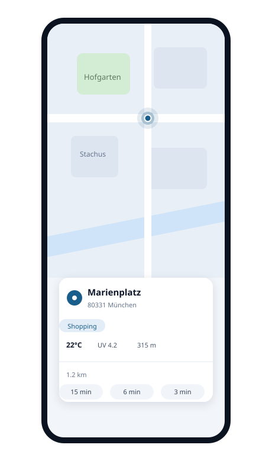
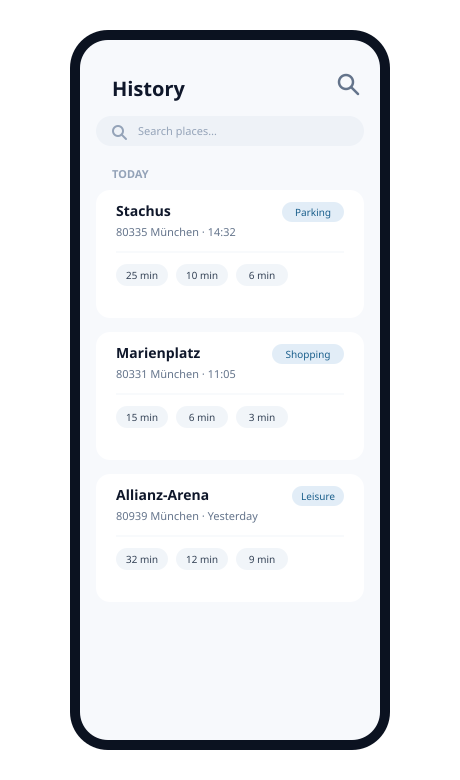

Nie den Parkplatz verlieren
Chaotische Innenstadt? Speichere deinen Parkplatz mit einem Tipp — locate.me führt dich direkt zurück zum Auto.
locate.me ist ein privater, selbst gehosteter Open-Source Geo-Tracker für dich und die Menschen, denen du vertraust. Finde heraus, wo du gerade bist — mit deiner Adresse, dem Wetter und mehr — und führe eine Chronik der Orte, die dir wichtig sind.

Nur ein paar Ideen — die Orte, die dir wichtig sind, automatisch gemerkt.
Chaotische Innenstadt? Speichere deinen Parkplatz mit einem Tipp — locate.me führt dich direkt zurück zum Auto.
Das kleine bayerische Restaurant mit dem perfekten Schnitzel? Monate später weiß deine Historie noch genau, wo es war.
Ein versteckter Biergarten, ein perfekter Foto-Spot — zufällig entdeckt und dann nie wieder gefunden? Ein Tipp speichert ihn — locate.me führt dich zurück.
Eine kleine Web-App, die dein Handy in ein smartes Orts-Notizbuch verwandelt. Ein Tab zeigt dir, wo du bist und wie es dort aussieht — ein weiterer Tab speichert den Ort, damit du immer den Weg zurückfindest.
Erfasse deinen Standort mit einem schnellen, hochpräzisen GPS-Fix.
Deine genaue Adresse wird automatisch über OpenStreetMap ermittelt.
Sieh Temperatur, UV-Index und Höhenlage an deinem aktuellen Ort.
Jeder gespeicherte Ort bleibt auf deiner persönlichen Liste und Karte — mit Distanz sowie Geh-, Rad- und Fahrzeit, dazu deine eigenen Tags und Kommentare.
Liegt wie eine native App auf deinem Startbildschirm — ein Tipp zum Öffnen.
Open Source und selbst gehostet — nur für die Menschen zugänglich, denen du vertraust. Deine Standorte bleiben deine.
Die gesamte Kommunikation zwischen deinem Handy und locate.me ist verschlüsselt (HTTPS).
Deine Daten werden ausschließlich innerhalb von locate.me genutzt.
Jeder gespeicherte Ort reiht sich in eine übersichtliche Historie — mit Tag, deinem Kommentar und der Zeit zu Fuß, mit dem Fahrrad oder dem Auto.

Deine Historie ist mehr als eine Liste von Pins:
Installiere locate.me als Progressive Web App auf deinem Handy. Sie funktioniert und fühlt sich an wie eine richtige App — erreichbar per Tipp vom Startbildschirm. Das musst du nur einmal machen.
Die Schritte sind in beiden Browsern fast identisch.
Nutze Safari, keinen anderen Browser und keine In-App-Ansicht.
Standort: Wenn der Browser Standortzugriff (GPS) anfragt, bitte erlauben. Diese Freigabe wird nur von dieser Website genutzt und sonst von nichts — sie wird nie an andere Apps oder Seiten weitergegeben.
Loslegen: Du brauchst kein Konto — probiere ruhig den gemeinsamen Demo-Benutzer user123. Du willst einen eigenen privaten Benutzer? Kontaktiere uns.